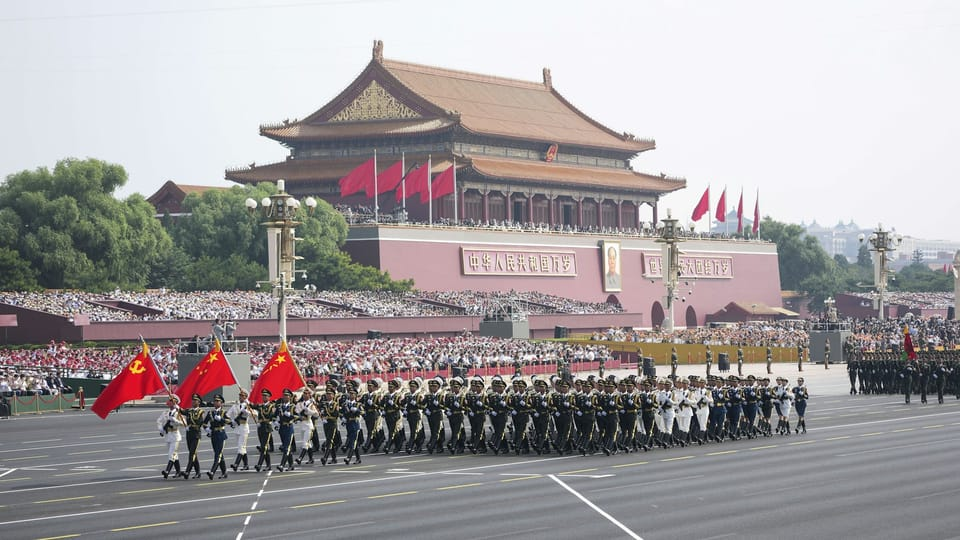

世界苦茶09月03日新闻 | 38条 | 中国进行反法西斯大阅兵

中国进行反法西斯大阅兵 | 普拉博沃突访中国 | Salesforce证实AI裁员4000人 | 特朗普对印度俄罗斯朝鲜在中国非常生气 | 阿富汗地震遇难超过1400人 每日三條新聞解析
苦茶数据
美元兑人民币：7.14（昨日7.14，前日7.12）
美元兑日元：148.49（昨日147.66，前日147.18）
上证指数：3813（昨日3853，前日3875）
标普500指数：6415（昨日6460，前日6501）
比特币：111277（昨日109586，前日108777）
布伦特原油：68.06（昨日68.44，前日67.75）
中国新闻
• 抗战胜利80周年阅兵9月3日上午在天安门广场举行。李强主持，中部战区空军司令员韩胜延指挥。受阅装备包括： 核导弹方队：空基远程导弹惊雷1、潜射洲际导弹巨浪3、陆基洲际导弹东风61、东风31、液体洲际战略核导弹东风5C。高超声速导弹方队：鹰击21、东风17、东风26D。另有巡航导弹、反舰导弹、舰载防空激光武器、反无人机、鱼雷、陆海空无人武器等受阅。除胡锦涛、朱镕基、宋平外，其余在世的正国级领导人均出席。电视画面显示，习近平率外国元首登上城楼时与普京、金正恩闲谈，普京谈及“再过七十年，生物技术不断发展，人类的器官会不断地移植，以至越活越年轻，甚至会长生不老”，金正恩大笑，习近平则答说“预测本世纪可能应该可以活到150岁”。特朗普在阅兵开始前发帖 暗讽习不尊重美国在二战中向中国提供过的帮助，并称普京与金正恩“密谋反美”。
• 上海学生手环采购叫停 ：上海多区教育局此前公告，拟斥资1.4亿元人民币，为学生统一配备运动手环。上海政府采购网星期一发布终止公告，原因为“因重大变故终止采购”。综合上游新闻和潇湘晨报星期二报道，上海多个区教育局在上海政府采购网密集发布采购意向公告，计划为三、六、七、十年级学生统一配备运动手环，总预算金额约1.4亿元，主要用于监测心率、记录运动数据、辅助教学管理等。据不完全统计，截至8月26日，嘉定区、静安区、松江区、金山区、黄浦区、奉贤区、长宁区、普陀区、徐汇区、杨浦区、闵行区等12个区教育局在上海市政府采购网上公布相关采购意向公告。
• 台陆委会警示陆社保冲击 ：台湾政府的大陆委员会在社交平台发文指出，中国大陆9月起强制缴纳社保，因此提醒台商要审慎评估赴陆投资。台陆委会星期一在官方脸书专页写道，中国大陆当天起将严格执行缴纳社会保险制度，劳资双方都须缴纳社保，过去双方私下达成“不缴社保”的约定均属无效，表面上看似强化劳工权益与健全社保制度，实际上对中小微型企业与基层劳工带来沉重冲击。
• 李干杰任海联会会长 ：中共政治局委员、中央统战部部长李干杰当选中华海外联谊会会长。据新华社报道，中华海外联谊会常务理事会星期二在北京召开。李干杰当选会长并讲话。李干杰形容中华海外联谊会是凝聚港澳台海外爱国人士的重要平台，是致力统一和民族复兴的重要力量。
• 中国对俄试行一年免签 ：中国将从9月15日起对持俄罗斯普通护照的公民试行一年免签政策。中国外交部发言人郭嘉昆星期二在例行记者会上说，为进一步便利中外人员往来，中国决定扩大免签国家范围，自2025年9月15日至2026年9月14日，对俄罗斯持普通护照人员试行免签政策。郭嘉昆说，俄罗斯持普通护照人员赴华经商、旅游、观光、探亲访友、交流访问，过境不超过30天，可免办签证入境。
• 习近平表示，中俄互利合作典范 ：中国国家主席习近平在与到访的俄罗斯总统普京会谈时指出，中俄关系是互利合作共赢的大国关系典范。据新华社报道，习近平星期二上午在北京人民大会堂与赴华出席2025年上海合作组织峰会和纪念中国人民抗日战争暨世界反法西斯战争胜利80周年活动的普京举行会谈。习近平指出，中俄关系经受住了国际风云变幻的考验，树立了永久睦邻友好、全面战略协作、互利合作共赢的大国关系典范。中方愿同俄方密切高层交往，支持彼此发展振兴，在涉及两国核心利益和重大关切问题上及时协调立场，推动中俄关系取得更大发展。
• 上合能源合作平台在京揭牌 ：中国-上海合作组织能源合作平台揭牌，中国将深化与上合组织国家能源领域交流合作。据央视新闻报道，中国-上海合作组织能源合作平台揭牌仪式星期二在北京举办。中国国家能源局主要负责人说，能源合作是区域务实合作的重要组成部分，自去年7月中国接任上合组织轮值主席国以来，中国企业在上合组织国家新签、开工、投产电力及可再生能源领域项目超160个，油气等领域项目超60个，总金额约3800亿元人民币，成为拉动地区经济社会发展的强劲动力。
• 上合峰会天津通过多项文件 ：9月1日，上海合作组织第25次元首理事会在轮值主席国中国天津举行。中国、俄罗斯、印度、巴基斯坦、伊朗及中亚多国领导人出席。峰会上，中国国家主席习近平呼吁成员国反对“霸权主义和强权政治”，推动实践真正的多边主义，并提出了建立上合组织开发银行的构想。习近平还宣布将为上合组织成员国设立人工智能合作中心。俄罗斯总统普京表示，成员国间以本国货币结算的交易不断增加，展现了真正的“多边主义”，为构建欧亚大陆新的稳定与安全体系奠定了基础，并称该体系与以欧洲或大西洋为中心的模式不同，将真正关注多国利益并保持平衡，“不会让一国以牺牲其他国家利益的方式保障己方安全”。会议期间，中、俄、印三国领导人的互动引人注目，展现了紧密的合作姿态。会议共批准了包括《上合组织成员国元首理事会天津宣言》《上合组织未来10年（2026—2035年）发展战略》《上合组织成员国元首理事会关于第二次世界大战胜利和联合国成立80周年的声明》在内的24份文件。为加强安全合作，会议决定成立四个中心，分别聚焦反恐、打击跨国有组织犯罪、信息安全和禁毒。经济方面，中国承诺今年将向成员国提供20亿元人民币的无偿援助，并为上合组织银联体提供100亿元人民币贷款。此次峰会决定接收老挝为新的对话伙伴，并同意接受独立国家联合体观察员身份。吉尔吉斯斯坦将接任上合组织2026年轮值主席国。
• 普拉博沃复访华，抗议趋缓 ：印尼总统普拉博沃于9月2日夜间启程飞往北京，继续稍早前曾决定取消的访华行程。中国外交部发言人证实普拉博沃已于3日凌晨抵达北京。在他宣布撤销一系列引发全国抗议的政策、军队于9月1日部署至首都后，各地抗议集会的规模逐渐减小。
亚太印太新闻
• 36名华人涉马国诈骗 ：36名中国公民涉嫌在马来西亚设立诈骗窝点，通过电话引诱中国公民投资虚构的投资计划。他们星期二在森美兰波德申推事庭被控。中国政府已经撤销这些嫌犯的护照，并希望引渡他们。据《星报》报道，这些被告听不懂英语或马来语，因此听不懂控状内容。推事决定安排华语翻译员，并择期9月12日过堂。这批被告年龄介于22岁至39岁，其中五人是女性。他们涉嫌在网上经营投资诈骗中心，专门锁定中国公民下手。
• 中马开启“黄金50年” ：中国国家主席习近平星期二晚上在北京与马来西亚首相安华会晤时强调，中马关系已顺利开启新的“黄金50年”，双方将以构建高水平战略性命运共同体为目标，推动合作不断迈上新台阶。新华社报道，习近平指出，中马是志同道合的好朋友，在国际风云变幻中相互支持，在现代化道路上携手并进，顺利开启中马关系新的“黄金50年”。今年4月，他对马国进行国事访问，双方就构建高水平战略性中马命运共同体达成重要共识。习近平强调，双方要突出双边关系“高水平、战略性”的新定位，深化全方位战略协作，坚定支持彼此核心利益和重大关切；携手建设区域高质量发展合作高地，在人工智能、新能源、半导体等新兴产业打造合作亮点，高水平推进“两国双园”和东海岸铁路等重点项目。
• 泰国为泰党推动解散国会 ：泰国《民意报》引述执政党高层人士报道称，泰国执政的为泰党正在着手推动解散国会。为泰党秘书长兼代理体育与旅游部长索拉翁说：“我们正在努力为国家寻找最合适的解决方案。这一事项属于代理总理的职权范畴，相关程序需要一定时间推进。”泰国下议院将于星期三召开特别会议，若各政党准备就绪，本周内或将举行新首相选举。
• 石破茂称不恋栈将听批评 ：日本首相石破茂称，他不会执意留任，并将谦虚接受外界批评。自民党内部正讨论是否提前举行党魁选举，以决定其去留。尽管自民党党内一直有呼声要石破茂下台，但他始终坚持留任。不过，星期二在党全体会议开幕礼上致辞时，石破茂却放软姿态，表明不执意留任，并“会在正确的时间作出正确的决定”。据彭博社报道，石破茂致辞时为自民党丢失大量议席道歉，并说：“我会接受一切批评，但作为党首，也有责任走完这段路。”
• 韩研判朝走“安俄经中” ：韩国情报机构旗下单位星期二发布报告，朝鲜有可能奉行“安俄经中”路线。据韩联社报道， 韩国国家情报院旗下国家安全战略研究院发布的报告称，朝鲜人金正恩即将出席中国人民抗日战争暨世界反法西斯战争胜利80周年纪念活动，此次访华主要目的在于紧密与中俄关系，加大对美谈判筹码。报告提及，金正恩在2018年、2019年先通过朝中首脑会谈改善同中国关系之后，再与美国元首会晤，据此推测，朝鲜需要争取中国的支持，以应对日后可能进行的朝美首脑会谈。因此，朝鲜有可能奉行“安俄经中”路线，与俄罗斯继续开展军事和安全合作，同时恢复与中国经济关系。
• 台外表示，赴陆阅兵者不代表台湾 ：台湾外交部指台湾民众出席中国大陆九三阅兵活动，不仅违背台湾主流民意，也不能代表台湾以及全体人民的立场。据台湾中央广播电台和《自由时报》报道，台湾外交部发言人萧光伟星期二回应媒体询问时，指中国大陆在国际场域对台湾的打压无所不用其极，又以军机舰不断骚扰，对台施加混合战手段与灰色地带袭扰。萧光伟说：“所以外交部认为，所有支持与捍卫中华民国台湾的国人，都应避免对国际社会释放出错误的讯号，让国际社会有误解台湾民主政治与主权立场的可能，也因此，如果有国人出席中方的活动相关的行为，这不仅和台湾的主流民意相违背，也更不能代表台湾以及全体人民的立场。”
• 赖清德称，团结必胜侵略必败 ：中国大陆将于星期三在北京举行抗战胜利80周年阅兵式，台湾总统赖清德星期二在军人节活动发表讲话时强调，“团结必胜、侵略必败”。据台湾总统府官网消息，赖清德当天上午出席军人节暨全民国防教育日表扬大会并致词。他说，星期二是九二海军节，67年前的九二海战，台海军官士兵们以寡击众，挫败大陆军方想要封锁金门岛的意图、成功执行运补任务，取得战略性胜利，为八二三炮战的胜利奠定稳固的基础。九二海战以及后续八二三炮战的胜利，更证明了真正的和平是来自团结抵抗侵略的决心和坚强的实力。
• 多名台政学界人士或赴陆阅兵 ：继国民党前主席洪秀柱之后，台湾媒体再报道，三名前立委李德维、周荃、曹原彰也可能会出席中国大陆的九三阅兵。《自由时报》报道，台方掌握到的消息显示，除了上述三人之外，现任立委陈玉珍的前助理游智彬、自称“高级外省人”的郭冠英、国民党前中央委员徐正文、台大教授苑举正等人也可能赴会。报道称，台湾国安人士示警，相关政党应明确表达立场，“否则将让台湾被拖进错误的历史与国际定位中”。
科技新闻
• 台积电否认黄仁勋“传话” ：美国晶片制造巨头英伟达执行长黄仁勋上月赴台，有消息指他主要是替美国总统特朗普政府传话。台积电星期二回应说，黄仁勋当时是应公司邀请作内部演讲。镜周刊星期二引述业界人士说，英伟达与超微半导体先前同意将出口中国大陆的人工智能晶片收入15%缴给美国政府，但从中获益的台积电未对美国有任何贡献，加上美国对台湾与半导体课征关税，台积电几乎都能转嫁给客户，特朗普无法接受。黄仁勋先前到台湾的目的，是帮特朗普传话施压台积电，要求分配利润。综合联合报和上报报道，台积电星期二对此回应说，公司与美国政府有通畅的沟通管道，黄仁勋赴台是应台积电邀请到内部演讲。
• 欧盟暂缓罚谷歌，避免美方反击 ：欧盟暂停了立即惩罚谷歌滥用其在广告技术领域主导地位的计划，原因是担心美国总统特朗普可能通过破坏一项跨大西洋贸易协议进行反击。欧盟监管机构内部曾将9月1日定为对美国科技巨头处以罚款并责令改变其商业模式的日期。但知情表示，随着该日期的临近，欧盟委员会竞争团队之外的高层人士担忧，该决定的时机和严重程度是否会刺激特朗普破坏贸易方面的近期进展，并以另一轮关税进行反击。反垄断主管特雷莎·里贝拉的团队正在回应就决定草案提出的进一步问题，该草案预计将包括对谷歌的罚款和停止令，要求其停止涉嫌滥用行为。最后一刻的干预可能会将宣布时间推迟数天甚至数周。
• 美法官裁定谷歌无需拆分 ：美国地区法官阿米特·梅塔周二公布了针对谷歌在网络搜索领域的反垄断案的裁决。美国法官裁定，谷歌无需出售 Chrome 网络浏览器，无需剥离 Android 操作系统。谷歌无需停止向苹果公司及其他公司支付预装谷歌产品的费用。法官禁止谷歌签订互联网搜索排他性合同。谷歌必须与竞争对手共享信息以解决在线搜索垄断问题。据了解，谷歌每年向苹果公司支付数十亿美元，以成为iPhone手机的默认搜索引擎。这对苹果公司来说利润丰厚，而对谷歌来说，这也是获得更多搜索量以及用户的重要途径。
• 马政府将约谈TikTok与Meta ：马来西亚通讯部长拿督法米称，政府周四将在武吉安曼警察总部与TikTok高层见面，就假新闻传播等社交媒体乱象展开讨论。拿督法米说：“这是因为我们发现该平台出现许多问题，特别是假消息传播，而该平台在与警方合作提供资讯时非常迟缓。尤其是假冒外科医生案件中，TikTok在向警方提供资料时反应迟缓，以致我不得不亲自致电TikTok首席执行官，求加快配合。”他今日出席 2025 年人工智能大会后接受媒体访问时强调，这种态度不可接受。他说，一同出席会议的还包括警察总长和总检察长。除TikTok外，他表示也将会召见META高层，但时间未定。
• 美国撤销台积电在华“经验证最终用户”授权： 美国已撤销台积电公司向其中国主要芯片制造基地自由发货关键设备的授权，可能限制该老一代设施的生产能力。美国官员最近通知台积电，决定终止这家台湾芯片制造商南京工厂所谓的 “经验证终端用户”授权。这一举措与美国撤销三星电子和SK海力士在华半导体企业的VEU授权类似。台积电在一份声明中：“台积电已经收到美国政府通知，我们南京厂的VEU授权将于2025年12月31日起被撤销。我们在评估情况并采取适当措施，包括与美国政府沟通的同时，仍全力确保台积电南京厂的不间断运营。”
• Salesforce CEO 证实因AI替代裁员 4000 人： Salesforce CEO 马克·贝尼奥夫最近在讨论 AI 如何帮助公司减少员工人数时表示，该公司已削减了 4,000 个客户支持职位。贝尼奥夫在讨论 AI 对 Salesforce 运营的影响时说道，“我把员工数量从 9,000 人减少到了 5,000 人左右，因为我需要的员工更少了。”Salesforce 一直站在人工智能革命的前沿，并打造了一支名为“Agentforce”的客户服务机器人团队。这位CEO表示， AI智能体已经完成了公司30%到50%的工作，其中两个角色特别有可能被 AI 代理自动化：支持和销售。贝尼奥夫表示，通过淘汰人工，采用先进技术，Salesforce迄今已将支持成本降低了17%。贝尼奥夫进一步透露，他正在研究“每一个功能”，看看如何将其变成一项智能体业务，因此销售和支持以外的进一步自动化也可能成为可能。
财经新闻
• 俄气将增供华并签管道备忘 ：俄罗斯天然气工业集团总裁宣布，公司与中国石油天然气集团签署协议，将经“西伯利亚力量”管道对华年供气规模从380万立方米增至440万立方米。据俄国卫星通信社报道，俄气总裁米勒说：“根据俄罗斯、中国和蒙古国三国领导人发表的公开声明，今天签署了具有法律约束力的关于修建‘西伯利亚力量-2号’天然气管道和过境蒙古国的‘东方联盟’天然气管道的备忘录。”新华社报道，中国国家主席习近平在星期二举行的中俄蒙三国元首会晤中，提出积极推动联通三国的跨境基础设施和能源项目。
• 澳新银行酝酿裁员5000人 ：作为大规模重组计划的一环，澳新银行正在考虑裁撤5000名雇员。彭博社星期一引述澳大利亚媒体《资本简报》报道，两名知情者透露的消息是，最终裁员规模目前尚未敲定，其中2000人可能是来自零售业务部门；剩余3000人则是其他业务的雇员。针对新加坡雇员是否受影响，澳新银行发言人答复《联合早报》询问时说：“我们正在对旗下的业务进行战略审查，任何战略变化将于10月中旬更新。同时，我们将继续思考短期内如何更好地服务我们的客户、股东及利益相关者，比如停止那些与优先关注事项不符的工作，并减少重复且复杂的内容。”
• 金价飙破3500美元创新高 ：随着美国联邦储备局本月降息的预期更强烈，现货金价星期二早间强势上涨，一度突破3500美元，达到历史高点。现货金价在新加坡时间星期二早间，一度涨至创纪录的每安士3508.5美元，到早上9时44分左右报3504.4美元。截至中午12时20分，现货金价稍有回落，至每安士3494.06美元。此外，今年12月交割的纽约商品期货交易所黄金期货价格，也已涨到每安士3563.3美元，今年迄今的涨幅高达28.87%。
• 快递行业反内卷步伐加快 核心区域开始涨价： 快递行业反内卷步伐加快。近期，在电商重镇广东、浙江两地，多家快递公司对电商客户上调快递费用。除浙江义乌、广东外，业内对福建、安徽、江苏、山东等地也有涨价预期。记者从浙江地区的部分快递网点与电商商家处了解到，7月底、8月初以来，电商快递价格确实有不同程度的上调。快递费用调涨，对特价快递与小件产生的影响较为明显，不过目前各大快递网点的业务量总体平稳。业内分析人士在接受采访时表示，此次国家 “反内卷” 政策力度空前，短期看，单票均价将回升，推动企业利润修复，末端派费的增加，将改善快递员收入。
• 特斯拉印度订单惨淡 ：特斯拉对印度市场的布局迄今并未取得理想成效，开售迄今订单表现平平，这进一步引发了人们对该公司全球增长前景的质疑。知情人士称，自七月中旬开始销售以来，这家电动汽车制造商仅收到了超过 600 份车辆订单，这一数字远未达到公司的预期。这大约相当于特斯拉今年上半年全球每四小时交付的车辆数。特斯拉今年计划向印度运送 350 至 500 辆车，首批车辆将于九月初运抵。首批交付的车辆将仅限于孟买、德里、浦那和古尔冈这四个城市。此次交付规模取决于已收到的车辆全额款项以及特斯拉在目前拥有实体业务的四个城市之外的交付能力。
• 特朗普称印美贸易关系为“完全单方面的灾难”，莫迪访华后表态： 美国总统唐纳德·特朗普周一再次加大对印度的批评力度，在印度总理纳伦德拉·莫迪赴华出席上海合作组织峰会后，称与印度的贸易关系是“完全单方面的灾难！”特朗普在“Truth Social”上的帖子中还表示，印度曾提出将关税降至零，但“为时已晚”，并称印度本应“多年前”就这样做，不过并未说明这一提议是在何时提出。这一言论背景是美国对印度征收了50%的关税，并在上月因其购买俄罗斯石油而额外加征25%的附加关税，印度对此批评为“不公平、不合理、不可接受”。特朗普重申，印度正在购买俄罗斯的石油和武器，却向美国大量出口商品，同时对美国产品征收高额关税。“原因是印度至今向我们征收的关税是所有国家中最高的，以至于我们的企业无法在印度销售。这一直是一场彻底的单方面灾难！”他写道。
俄乌战争
• 普京表示，不反对乌入欧盟 ：俄罗斯总统普京说，莫斯科从未反对乌克兰潜在加入欧盟，并驳斥了有关俄罗斯计划攻击欧洲的说法。路透社报道，普京星期二在中国与斯洛伐克总理菲佐会晤时指出：“关于乌克兰加入欧盟，我们从未反对过。至于北约，那是另一回事。”普京还说：“一旦冲突结束，保障乌克兰安全是有多种选择。在这一点上，我认为存在找到共识的可能。”
• 乌促中助和平中方愿促谈 ：乌克兰呼吁中国在俄罗斯总统普京访华期间，为在乌克兰实现和平作出努力。中国外交部回应时，中国愿继续为政治解决乌克兰危机发挥建设性作用。据法新社报道，乌克兰外交部星期一在声明中说：“考虑到中华人民共和国的重要地缘政治地位，我们欢迎北京在尊重《联合国宪章》的基础上，为在乌克兰实现和平发挥更积极的作用。”中国外交部郭嘉昆隔天在例行记者会上说，中国在乌克兰危机问题上的立场是一贯的、明确的。
• 印度总理会见普京，呼吁停止战争并寻求和平解决： 莫迪总理重申了对近期旨在解决乌克兰冲突的倡议的支持，并强调需要加快停火进程，找到持久的和平解决方案。俄罗斯外交部表示，普京与莫迪还讨论了俄印在经济、金融和能源领域的双边合作。据称双方对两国关系的稳定发展“表示满意”，并“重申了进一步加强两国特殊和优先战略伙伴关系的支持”。莫迪还告诉普京，他期待今年晚些时候在印度举行的第23届年度峰会上再次会晤。
• 克里姆林宫否认特朗普与普京曾同意与泽连斯基面对面会晤： 克里姆林宫外交政策助理尤里·乌沙科夫9月2日表示，美国总统特朗普与俄罗斯总统普京之间并没有达成与乌克兰总统弗拉基米尔·泽连斯基会晤的协议，这与特朗普此前的说法相矛盾。特朗普在8月19日称，他已开始为普京与泽连斯基的会面“做安排”，并可能举行三方会谈。乌沙科夫在接受俄罗斯宣传人士帕维尔·扎鲁宾采访时说：“目前确实有关于三方会议、普京与泽连斯基会晤的讨论。但据我所知，普京和特朗普之间并没有就此达成协议。”这一表态出现在特朗普为莫斯科设定的另一项推动战争和解的最后期限到期之后。乌沙科夫表示，在特朗普与普京的电话交谈以及他们在阿拉斯加的峰会期间，曾讨论过将俄乌谈判的代表级别提升，但并未达成协议。“到目前为止，媒体上所报道的并不完全符合我们的共识。”他说。
国际新闻
• 世贸总干事吁夯实贸易基础 ：世界贸易组织总干事伊维拉说，全球贸易必须建立在更坚实的基础之上。新华社报道，伊维拉星期一在斯洛文尼亚布莱德战略论坛上说，当前全球贸易体系遭遇干扰，处于“不稳定状态”。她说，各国应该为未来数年乃至数十年的全球贸易奠定更坚实的基础。斯洛文尼亚经济部国务秘书弗兰盖日强调，必须进一步巩固世贸组织的核心原则。他同时指出，欧盟与美国近期达成的贸易协议“不公平且不平衡”。
• 特朗普称美军击毙贩毒船员 ：特朗普称，美军9月2日在南加勒比海袭击了一艘从委内瑞拉出发、由“阿拉瓜火车”组织运营的运毒船，造成11人死亡。他还发布了一艘海上快艇爆炸并起火的视频。特朗普发布的视频较为模糊，无法看清人数和运载物品。白宫也没有解释如何确认船上的成员身份。“阿拉瓜火车”组织十多年前起源于委内瑞拉中部阿拉瓜州的一座监狱。近年来，随着委内瑞拉经济动荡，该组织不断扩大。特朗普重申“阿拉瓜火车”组织在委内瑞拉总统马杜罗的控制下运作，造成了美国和西半球的大规模谋杀、贩毒、暴力和恐怖行为。美军近几周正向拉丁美洲和加勒比海域部署7艘军舰、1艘攻击核潜艇以及4500名海军陆战队员和水手，以打击贩毒集团。美军还一直在该地区利用P-8间谍机收集情报。马杜罗则坚称美国正在制造虚假的贩毒叙事，试图迫使他下台。他和其他政府官员一再援引联合国的一份报告说，经委内瑞拉运输的可卡因仅占哥伦比亚生产可卡因数量的5%。马杜罗9月1日威胁，如果委内瑞拉受到美军袭击，他将依宪法宣布建立“武装共和国”。
• 阿富汗强震遇难超1400人 ：阿富汗塔利班官员9月2日称，该国东部8月31日地震造成的死亡人数已上升至1411人，另有3124人受伤，超过5400所房屋被毁。
• 苏丹泥石流或致上千人亡 ：苏丹达尔富尔中部马拉山脉的塔拉辛村8月31日因连日大雨遭遇山体滑坡。反政府武装“苏丹解放运动”称，该村被完全夷为平地，初步信息显示，该村仅一人幸存，其他所有村民死亡，死亡人数估计超过千人。“苏丹解放运动”呼吁联合国和国际救援机构帮助搜寻遇难者遗体。
• 欧盟军费2025年将创新高 ：欧洲防卫局称，欧盟防务开支预计将在2025年达到3810亿欧元，创下历史新高。欧洲各国正加大投入，以应对来自俄罗斯的安全威胁。法新社报道，与前一年相比，这一数字增长了10%。在美国总统特朗普施压下，欧洲北约成员国已承诺显著提升军费。特朗普长期批评欧洲军费不足，并在今年7月的北约峰会上要求盟国将国防相关开支提高至国内生产总值的5%。欧盟外交与安全政策高级代表卡拉斯星期二强调：“欧洲正创纪录地增加防务开支，以保障民众安全，而且这不会是终点。”
• 特朗普正在将太空司令部迁至阿拉巴马州： 当地时间周二，美国总统特朗普在新闻发布会宣布，正在将美国太空司令部总部从科罗拉多州迁至阿拉巴马州。此举推翻了前总统拜登2023年将其留在科罗拉多斯普林斯的决定，该司令部临时总部已在那里设立。当被问及为何选择阿拉巴马州作为太空司令部所在地时，特朗普表示：“...这很合适，因为我们在当地还有很多其他资源”，并提及美国国家航空航天局、太空探索技术公司以及贝索斯旗下的蓝色起源公司在该州的机构。他还表示，太空司令部总部将在建设 “金穹” 导弹防御系统过程中 “发挥关键作用” 。 （翻评：之前就是这个发布会，大家以为Trump要辞职。）